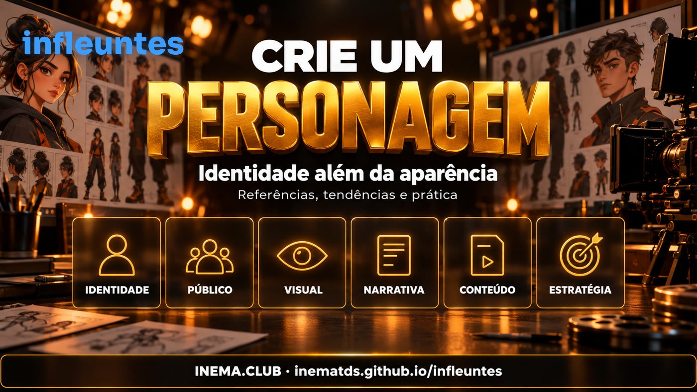

O que foi onda, o que perdeu força e o que continua relevante entre os influenciadores virtuais.
O infleuntes é um guia de pesquisa sobre influenciadores virtuais e personagens feitos com IA. Serve para quem cria conteúdo e quer desenvolver uma identidade que o público reconheça e tenha motivo para acompanhar. Reúne doze referências, compara sinais de continuidade e perda de força e oferece uma ficha prática de personagem. É gratuito: basta ler, abrir as fontes e fazer o exercício.

Troque “como meu personagem deve parecer?” por “por que alguém acompanharia esse personagem?”. Aparência reconhecível ajuda, mas a pessoa volta por humor, utilidade, histórias, música, identificação ou uma combinação desses motivos.
Influenciador virtual é o personagem que tem presença pública digital. Pode ser feito com animação 3D, computação gráfica, composição de imagens ou IA generativa. Personagem feito com IA não significa personagem autônomo: há pessoas escolhendo pautas, imagens, falas e parcerias. Miquela e Shudu são referências históricas de computação gráfica; não devem ser apresentadas como criações recentes de geradores de imagem. Library of Congress · The Diigitals.
Esta é uma leitura editorial das evidências, não um ranking de popularidade. “Superado” se refere à estratégia insuficiente, não à extinção de uma tecnologia ou à falta de valor de um personagem.
| Leitura | O que entra aqui | O que fazer com isso |
|---|---|---|
| Superado como proposta completa | “Parece uma pessoa real, então vai crescer”; repetir fotos bonitas; apresentar seguidores como faturamento | Tratar realismo como recurso de produção. Definir uma razão para acompanhar e medir respostas reais |
| Onda de novidade | A surpresa de descobrir que a modelo não existe; manchetes sobre dinheiro fácil; imitações de um meme viral | Estudar o gancho, mas não presumir que a novidade continua nem que copiar garante resultado |
| Continuidade comercial documentada | Lu do Magalu; atuação da imma em campanhas e anúncio de interface conversacional em 2026 | Observar integração entre personagem, marca e serviço. Campanha não é prova de crescimento de seguidores |
| Continuidade criativa, com sinais mistos | Milla Sofia combina música e plataformas; Aitana segue no portfólio da agência; Shudu mantém posicionamento editorial | Separar operação existente de aceleração. Não chamar presença de “explosão” |
| Legado valioso, tração a revisar | Miquela, Naina, Rozy e Emily no retrato de Instagram fornecido | Aprender com a identidade e conferir atividade antes de usar como exemplo de crescimento atual |
Lu do Magalu é o caso com evidência comercial recente mais forte nesta seleção. Há campanha Koleston em 2026 e lançamento publicitário do WhatsApp da Lu, conectando personagem e compra assistida. Isso sustenta “continua relevante comercialmente”; não é uma auditoria independente de lucro nem de toda a audiência. Exame — campanha e resultados declarados · LBB, 16/06/2026.
imma mostra expansão de uso. Em 22/07/2026, a Aww anunciou sua presença como personagem conversacional do serviço HITO na AI EXPO de agosto. É evidência de desenvolvimento de produto e divulgação empresarial; não demonstra, sozinha, viralização ou crescimento no Instagram. Anúncio oficial da Aww.
Milla Sofia tem continuidade e um trimestre melhor que o mês, segundo o levantamento fornecido: saldo de cerca de +22 mil no Instagram em 90 dias, mas perda no período de 30 dias. O site próprio confirma música e modelagem como frentes do projeto. Não há prova aqui de que a música causou o crescimento. CreatorDB · Site de Milla Sofia.
Marisa Maiô é um exemplo de onda com aplicação comercial comprovada em 2025. O Magalu documentou uma campanha com a personagem em junho daquele ano. A fonte prova a parceria histórica; esta pesquisa não encontrou evidência comparável que permita afirmar que ela continua no mesmo auge em outubro de 2026. Isso também não prova que o projeto acabou. Comunicado do Magalu, 12/06/2025.
Conclusão prática: a oportunidade não desapareceu, mas “é feito com IA” não basta como argumento. Utilidade, humor, narrativa, cultura e distribuição merecem mais atenção que a promessa de uma modelo virtual que ganha dinheiro sozinha. Saturação e perda do efeito novidade são hipóteses explicativas, não causas demonstradas pelos números abaixo.
Snapshot fornecido pelo autor, com coleta entre 29/09 e 12/10/2026, baseado em CreatorDB, HypeAuditor e Likeometer. Valores aproximados, sujeitos à metodologia dos agregadores. Não é uma consulta direta às contas nem um painel em tempo real. As datas de atualização de cada fonte podem diferir.
| Personagem | Instagram aproximado | 30 dias, conforme fonte | Frequência / atividade registrada | Leitura prudente |
|---|---|---|---|---|
| Lil Miquela | 2,249 milhões | -0,42% | ~0,2 publicação/semana; início de outubro | Legado forte; baixa frequência e contração recente |
| Emily Pellegrini | 548 mil | -0,7% | Último registro aproximado: abril/2026 | Repercussão passada; atividade atual não confirmada diretamente |
| Shudu | 236 mil | -0,1% | Esporádica; aproximadamente setembro/2026 | Pequena contração, sem evidência de colapso |
| Naina | 346 mil | -5,6% | ~4,2 publicações/semana; início de outubro | Publicar muito não impediu perda de seguidores |
| Milla Sofia | 679 mil | -0,5% | ~0,9 publicação/semana no Instagram | Mês negativo, trimestre positivo no levantamento |
| imma | 377,8 mil | Não confirmado | Frequência recente não confirmada | Projetos comerciais e audiência precisam de análises separadas |
| Rozy | 160 mil | -0,5% | Último registro aproximado: abril/2026 | Sinal de baixa atividade indexada; causa não demonstrada |
Não confundir: perda de seguidores não mede queda de alcance, receita ou visualizações. “Última publicação” pode excluir stories, materiais apagados e outras plataformas. Os percentuais foram preservados como fornecidos pelos agregadores, não recalculados como uma série homogênea.
A conferência da página de Naina reproduziu os números de 08/10: 345.982 seguidores, -19.271 em 30 dias e ~4,2 posts/semana. Porém a página repete a variação de 90 dias na linha de 365 dias e mistura descrições de plataformas; por isso não usamos sua linha anual nem sua biografia automática como prova independente. CreatorDB — Naina.
Para Miquela, há também análise jornalística de 2025 sobre perda de seguidores. Não extrapolamos uma média histórica para todos os meses de 2026. A alegação sobre encerramento da operação de Rozy não foi confirmada independentemente e foi excluída das conclusões. Digiday, 11/09/2025.
Fontes do snapshot: Miquela / HypeAuditor, Miquela / CreatorDB, Emily, Shudu, Naina, Milla, imma, Rozy.
Os aprendizados abaixo são interpretações editoriais. Um portfólio disponível confirma representação ou presença pública, mas não basta para classificar crescimento atual. Não reproduzimos fotos dos personagens: consulte as fontes e perfis vinculados.
Referência original · legado, com contração no snapshot. Personagem digital associado a moda, música e narrativa social. A Library of Congress registra sua origem em computação gráfica. O aprendizado é construir personalidade e continuidade além do rosto. Evite tratar toda história ficcional como experiência vivida por uma pessoa.
Instagram · Registro da Library of Congress.
Referência original · caso de repercussão histórica. A cobertura de janeiro de 2024 apresentou a modelo feita com IA. Serve para estudar estética aspiracional e curiosidade, sem transformar alegações de faturamento em promessa replicável. Seu estado atual exige nova verificação direta; o snapshot não comprova atividade recente.
Perfil indicado no original · Radio Deejay, 04/01/2024.
Referência original · posicionamento editorial persistente. A The Diigitals apresenta Shudu como sua modelo digital original. O aprendizado é iluminação, composição, materialidade e coerência de moda. Qualidade de portfólio não prova crescimento de audiência; a pequena retração do snapshot não apaga o valor do caso.
Instagram · Portfólio oficial.
Referência original · ativa, mas perdendo seguidores no recorte. O projeto ligado à Avtr Meta Labs explora personagem, moda e entretenimento no contexto indiano. Serve para pensar cultura e histórias recorrentes. O caso também impede a fórmula simplista de que mais posts sempre trazem mais seguidores.
Instagram · Avtr Meta Labs · Métricas do agregador.
Referência original · continuidade com sinais mistos. O site do projeto apresenta músicas e modelagem, com links para plataformas de áudio. O aprendizado é criar algo para acompanhar além de uma sequência de retratos. A diversificação está documentada; seu efeito causal sobre crescimento e receita não está medido aqui.
Referência original · expansão de uso em 2026. Cabelo rosa curto e universo urbano compõem sua identidade reconhecível. O anúncio HITO acrescenta a dimensão conversacional. O aprendizado é preservar elementos centrais enquanto se amplia o uso do personagem; um anúncio não confirma escala de adoção.
Instagram · Aww / HITO, julho de 2026.
Referência original · baixa atividade indexada no snapshot. Apresentada em portfólio de comunicação como influenciadora e cantora virtual. Serve para estudar expressão e campanhas. A manutenção de um personagem depende de operação humana; não atribuímos sua baixa atividade a uma causa empresarial sem confirmação.
Instagram · Portfólio da Demill.
Adição da pesquisa · continuidade comercial documentada em 2026. É a voz de uma marca brasileira, conectada a conteúdo, campanhas e comércio. O aprendizado é dar uma função clara ao personagem. A identidade pode evoluir visualmente sem desaparecer, como mostra a campanha de mudança de cabelo.
Instagram do Magalu · Campanha de 2026.
Adição da pesquisa · portfólio disponível, crescimento não auditado. A The Clueless apresenta a personagem associada a fitness, moda e jogos. O aprendizado é combinar assinatura visual com interesses definidos. A lista de clientes da agência não deve ser atribuída integralmente à personagem; receita divulgada na imprensa não equivale a lucro auditado.
Instagram · Página oficial da personagem.
Adição da pesquisa · marco histórico de expansão. A Warner Music publicou em setembro de 2023 a notícia de contratação da personagem digital e lançamento de single. O aprendizado é que uma aparência assumidamente estilizada pode sustentar uma identidade artística. A notícia de 2023 não comprova tração em 2026.
Instagram · Warner Music, 02/09/2023.
Adição da pesquisa · referência de animação, não prova de IA generativa. O personagem do brasileiro Kael Cabral aparece no programa da Pictoplasma de 2025, com humor, narrativas visuais e colaborações. O aprendizado é que silhueta, ritmo e identificação podem importar mais que rosto realista. Não usamos números antigos como audiência atual.
Adição da pesquisa · onda de 2025 com parceria comprovada. A apresentadora ficcional usa códigos de programas de auditório e humor brasileiro. O aprendizado é combinar personagem, formato e contexto cultural. Copiar a aparência da personagem não reproduz o timing nem o roteiro que sustentaram a repercussão.
Contexto e criador — Veja SP · Campanha oficial do Magalu, junho/2025.
Consistência tem quatro camadas: visual, verbal, narrativa e estratégica. Repetir o rosto resolve apenas parte da primeira.
Essas são recomendações de planejamento e revisão, não um teste comparativo de ferramentas. O guia não atribui aos personagens um software de produção que seus criadores não confirmaram.
Copie a ficha e responda em frases curtas. Faça isso antes de escolher o gerador de imagem.
Nome e descrição em uma frase:
Para quem fala:
Por que alguém voltaria amanhã:
Três traços visuais fixos:
Três traços de personalidade:
Tom de voz e expressões recorrentes:
Universo cultural e situações habituais:
O que o personagem nunca faz:
Quadro recorrente 1:
Quadro recorrente 2:
História em três episódios:
Como identifico o personagem como virtual:
O que vou medir no primeiro teste:
Hipótese de parceria ou produto coerente:
Exemplo fictício: Bia, uma apresentadora virtual que ajuda adultos a entender tecnologia com situações do cotidiano. Sua marca é o humor paciente, um figurino reconhecível e demonstrações curtas. Um quadro recorrente acompanha a mesma tarefa em três etapas: dúvida, tentativa e resultado. O teste mede se as pessoas entendem a explicação e pedem o próximo episódio. Não é um caso de sucesso real nem promessa de receita.
Para discussão no INEMA.VIDEOS: depois de estudar os casos, qual parte do seu personagem precisa mudar: a aparência, a história, o público ou a razão para acompanhá-lo? O material original menciona “VIP → Progress”; essa dinâmica foi preservada no arquivo original, mas não é requisito para usar este guia aberto.
Síntese: personagem + identidade + narrativa + público + operação. Use referências para entender decisões, não para copiar rostos, histórias ou promessas de sucesso.